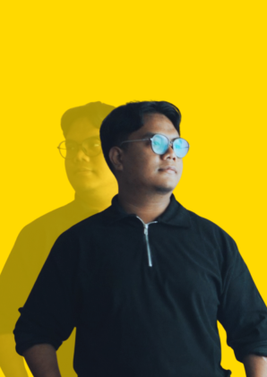

About Saiful Iqbal
I'm Muhammad Saiful Iqbal Abdul Rani, usually Saiful Iqbal, or just Iqbal. I'm a full-stack software engineer and cybersecurity developer from Kluang, Johor, Malaysia, the founder of Team ChendAwan Ventures, and the builder of VERITAS, a live web vulnerability assessment platform.

01Who I am
I build software that people depend on, and I try to make it secure from the first design decision rather than patching it in later. My work sits where software engineering and cybersecurity meet: I design and ship full-stack systems for real clients, and I build tools that test whether web applications are as safe as they look.
If you've searched for "Saiful Iqbal" and landed here, this is my official website. Everything on it, from case studies to certifications, is written and maintained by me. You can also find me on LinkedIn and GitHub (HarlequinCS).
02What I've built
In January 2025 I founded Team ChendAwan Ventures, a registered, student-led software business in Johor. We take projects from the first conversation with a client to production and support after handover. Two projects show the range:
- HRSB ONE: an HR, attendance and payroll platform with more than 15 modules for HRSB Holdings Sdn Bhd. I lead development and the project. It handles biometric attendance, multi-level overtime approvals and Malaysian statutory payroll (EPF, SOCSO, EIS, PCB and zakat).
- JohorSTEMHub.com: a statewide STEM education platform for the Johor State Education Department (JPNJ), where I was lead architect and project manager.
Before that, as an ICT intern at JPNJ (October 2024 to February 2025), I built and deployed the Smart Office Staff Movement Tracker, which replaced manual logging for department staff.
03Security work
My final-year project, VERITAS, is a multi-tenant web vulnerability assessment platform, live at scanwithveritas.tech. I built it alone. Customers must prove they own a domain before it can be scanned, and every finding has to be confirmed by evidence. Its rule is AI proposes, evidence validates, rules decide. It draws on a corpus of 210,845 payloads in 65 categories mapped to the OWASP Top 10.
I compete in capture-the-flag events. My best result so far is 1st Runner-Up at the National TAMiNG iCTF8 Hacking Competition (2026), and I've also competed in OWASP KL CTF, Re:Hack, IHack UiTM and others. I hold ten security and technical certifications, including Certified Red Team Operations Management (CRTOM), Certified Threat Intelligence & Governance Analyst (CTIGA), and the CLLMSP and CLLMSE certifications in LLM security. The full list of credentials is on the homepage.
04Education
- BSc (Hons.) Computer Science, Netcentric Computing, Universiti Teknologi MARA (UiTM), Melaka (Jasin), 2025–2027 (expected). CGPA 3.74. Final-year project: VERITAS.
- Diploma in Computer Science, UiTM, Johor (Segamat), 2022–2025. CGPA 3.42.
Outside the classroom, I was lead editor of two mathematics modules published by the Johor State Education Department and used by schools across Johor, and I received the Best Contributor Award from Gerakan Mahasiswa Jauhar (GERMAJ) in 2025.
05How I work
I learn the business process before I write code, because payroll, attendance and approval rules are where systems usually go wrong. I treat least privilege, scope control and auditability as architecture decisions. Long-running work goes to queues so the system keeps working when an external service fails. And I document what I hand over, so clients can run and maintain it themselves.
06Frequently asked questions
Who is Saiful Iqbal?
Saiful Iqbal (full name Muhammad Saiful Iqbal Abdul Rani) is a software engineer and cybersecurity developer from Kluang, Johor, Malaysia. He founded Team ChendAwan Ventures and built VERITAS, a web vulnerability assessment platform.
What does Saiful Iqbal do?
He designs and builds production web and mobile systems for government and corporate clients through Team ChendAwan Ventures, and works on application security: vulnerability assessment, authorised penetration testing tools and capture-the-flag competitions.
Where is Saiful Iqbal based?
Kluang, Johor, Malaysia. He is open to on-site, hybrid or remote work anywhere in Malaysia, and to international roles.
What is VERITAS?
VERITAS is a multi-tenant web vulnerability assessment platform that Saiful Iqbal designed and built alone as his final-year project at UiTM. It verifies domain ownership before scanning and backs each finding with evidence. It is live at scanwithveritas.tech.
Is Saiful Iqbal available for work?
Yes. He is looking for an internship, part-time or contract role in security software engineering, information security, cybersecurity consulting, embedded systems or solutions architecture.
How can I contact Saiful Iqbal?
Email iqbal.intern@gmail.com, use the contact form on the homepage, or message him on LinkedIn (saiful-iqbal12).